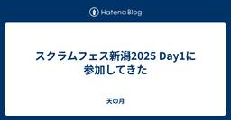
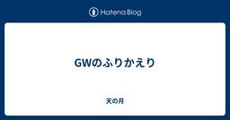
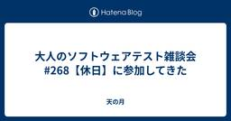
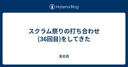
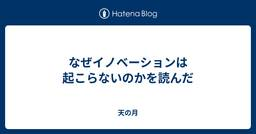
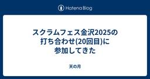

天の月
https://aki-m.hatenadiary.com/
ソフトウェア開発をしていく上での悩み, 考えたこと, 学びを書いてきます(たまに関係ない雑記も)
フィード

スクラムフェス新潟2025 Day1に参加してきた
天の月
www.scrumfestniigata.org スクラムフェス新潟Day1に参加してきたので会の様子と感想を書いていこうと思います。 到着 リハーサル いくおさんが現れる やまずんさんと初対面する リハーサル のりっくさんマッシャーさんと話す じょーさんと話す ささおさんと話す KuroさんほそたにさんHIROさんと話す びばさんと話す じゅんぺーさんと話す えわさんと話す オープニング スポンサーセッション おおひらさんとnacoさんのセッションを聞く keynote ばっさーさんと会ってグッズをもらう かっぱさんとお話する かっぱさんきょんさんHIROさんとお話する KAZUKINGさん…
1日前

GWのふりかえり
天の月
自分はまだGWは終わっていないのですが、明日からはスクラムフェス新潟に参加するということもあり、今年は14日くらい取得したGWにやっていたことをふりかえろうと思います。 読書 旅行 運動 コーディング 登壇資料作成 睡眠 読書 ここ最近読書のペースが落ちていたので、読みたかった本をばーっと色々読んでいきました。 クリティカルチェーン ストリートコーダー つくりながら学ぶ！LLM 自作入門 ダイナミックリチーミング 第2版 ―5つのパターンによる効果的なチーム編成 アジャイルデータモデリング 組織にデータ分析を広めるためのテーブル設計ガイド Good Code, Bad Code ～持続可能な開…
2日前
yr-learning Vol66に参加してきた
天の月
yr-camp.connpass.com こちらのイベントに参加してきたので、会の様子と感想を書いていこうと思います。 環境構築 関数型プログラミングをTSでやっていく場合の雰囲気を掴む 最初のテストケースを書く 小さな歩幅で進める 環境構築 github.com 今日からは関数型プログラミングで開発をしてみようという話をしていたので、早速環境構築から取り掛かっていきました。 リポジトリはこれまでのものを流用しようということで、ディレクトリだけ切ってworkspaceFolderを作ったりindex.tsやtsconfig.jsonを作っていきました。(Bunでほとんどは自動化されていたのでだ…
3日前

大人のソフトウェアテスト雑談会 #268【休日】に参加してきた
天の月
大人のソフトウェアテスト雑談会 #268【休日】 - connpass 今週もテストの街葛飾に行ってきたので、会の様子と感想を書いていこうと思います。 スクラムフェス新潟 イラスト 生成AIが出てからのプロポーザル変化 テスト観点 全体を通した感想 スクラムフェス新潟 いよいよ今週に迫ってきたスクラムフェス新潟の話をしていきました。 おおひらさんが急遽オープニング登壇をすることになったためおおひらさん自身の登壇もある中で準備が大変だという話をしたり、今年のスクラムフェス新潟にはのりっくさんも来るという話をしたり、発表準備をお互いにどのようにやってきているのか？といった話をしたりしていました。 …
4日前

スクラム祭りの打ち合わせ(36回目)をしてきた
天の月
aki-m.hatenadiary.com こちらの打ち合わせをしてきたので、会の様子と感想を書いていこうと思います。 雑談 Confengineのupdate キャッシュ・フローのupdate 公式Xでの告知 雑談 秋田→仙台→新潟という独特？なルートで旅をしている中で、なぜ仙台に寄ろうと思ったのか？という話から仙台で楽天とオイシックス新潟の1戦を見たいと思ったのとバスケの試合を見に行きたかったのが理由だという話をしていました。 選手一覧を見ると知っている選手が多数いて驚きでしたが、これでもなかなか勝てないというのはプロ野球のレベルの高さを思いしりました。 Confengineのupdate…
5日前

なぜイノベーションは起こらないのかを読んだ
天の月
www.maruzen-publishing.co.jp 献本いただいたこちらの本を読んだので、印象に残った部分や感想を書いていこうと思います。(読書感想ブログを書くときは自分はいつもこのスタンスですが)ぜひ実際に手にとって読んでほしいので、書籍の中身にはあまり触れないように意図的にしていますが、記載していない部分も含めて示唆に富む箇所が多く、素晴らしい本でした。 本書を特におすすめしたい人 本書で特に印象に残ったトピック 3タイプのイノベーションとリーダーシップ 書いてしまいがちなよくないビジネスモデルキャンバス 読んでいて個人的に好感がもてたポイント すっきりした翻訳 おまけ(誤字発見) …
6日前

スクラムフェス金沢2025の打ち合わせ(20回目)に参加してきた
天の月
aki-m.hatenadiary.com スクラムフェス金沢2025に向けた準備をしてきたので、会の様子を書いていこうと思います。 諸々の発注確認 プロジェクター 基調講演のConfengine HPの更新 追加チケット ノベルティ 諸々の発注確認 スピーカーチケットの発行状況の確認と弁当や飲み物の発注の確認、ステッカーの発注確認、Xバナーの入稿確認、ポスターの入稿確認をしていきました。 弁当や飲み物に関しては使える値段が一定決まっているので、昨年よりは少し豪華なものが頼めるんじゃないか？という話をした後に、とりあえず今人数が確定している分に関しては先んじて発注をしてしまおうという結論になり…
7日前

Hey Say アジャCITYの読書会(4回目)に参加してきた
天の月
表題のイベントに参加してきたので、会の様子を書いていきます。今回もホンダ流のワイガヤのすすめを読んでいきました。 多様性 人事に任せる 差の価値と違いの価値 キックオフなどではワイガヤは効果がない？ アイスブレイクを行う人 ワイガヤの条件 多様性 多様性が重要と言いつつも受け身型の人はあまり推奨されないという話があったりしたので、特性が違う人をなんでもかんでも受け入れるというのはあんまり望ましいことではないんだろうなという話をしていきました。 そう考えると、ワイガヤを成立させるためには結構ハードルが高いかもしれないという意見もありました。 人事に任せる ワイガヤに向いていない人のコントロールを…
8日前
2025年4月のふりかえり
天の月
2025年も1/3が終わったのでふりかえりをしていこうと思います。 仕事 社外活動 プライベート 仕事 ここ数ヶ月ずっと忙しかった中で一つの山を無事に乗り越えることができて、久しぶりに休みも取れたり無理なく働けたりする時期があったりした一ヶ月になりました。 改めてここまでをふりかえってみると、自分の責任範囲を超えてうまくやることができたなと思えた一方で、すべてをトータルして見たときにはあんまり望ましい結果といえない部分も多くあって、そこが自分の責任範囲や専門性からは遠い状況であった際にこのあたりをどうしていくか？何がやれるのか？というのに悩む月でした。 また、(この言葉は個人的にあんまり好きで…
9日前
yr-learning Vol65に参加してきた
天の月
yr-learning Vol65 - connpass こちらのイベントに参加してきたので、会の様子と感想を書いていこうと思います。 これまでやってきたCoding Kataのソリューションを見る 全体を通した感想 これまでやってきたCoding Kataのソリューションを見る github.com 一旦前々回でこれまでのようにCoding Kata(Trading Card Game)を終わりにしようという話だったので、実装の正解例を見ていきました。話としては以下のようなコメントが出ていました。(常体かつ箇条書きで記載していきます) E2Eがあってそのケースは非常にシンプルというのは面白い…
10日前
大人のソフトウェアテスト雑談会 #267【昭和】に参加してきた
天の月
https://ost-zatu.connpass.com/event/353012/ こちらのイベントに参加してきたので、会の様子と感想を書いていこうと思います。 製造業カレンダー 自動運転 自社のブログ 全体を通した感想 製造業カレンダー お正月休みやGWというのは結構な日があるけれども、祝日はほぼないという話がありました。工場をできる限り長く動かしたいという意図で作られているところがスタートになっているそうで、1日だけ休みを取るといったことは嫌うそうです。 ちなみに、基本的にすべての製造業はこのカレンダーで動いているものの、ソニーだけは製造業なのにこのカレンダーを採用していないということ…
11日前
スクラム祭りの打ち合わせ(35回目)をしてきた
天の月
aki-m.hatenadiary.com こちらの打ち合わせをしてきたので、会の様子と感想を書いていこうと思います。 開催趣意書のupdate スポンサー費用の使い道の記載 開催概要 タイムテーブル HPのupdate 告知 開催趣意書のupdate 開催趣意書をupdateしました。 スポンサー費用の使い道の記載 XP祭りと同時開催するということもあって、スクラム祭りにスポンサーするとどのような用途で何に使われるのか？という話をはっきり書いておいたほうがスポンサーにとっても親切だろうということで、スポンサー費用の使い道を記載することにしました。 また、XP祭りと同時開催する部分に関しては、…
12日前
2週間以上ゆっくりしてみることにした
天の月
今年のGWは、社会人になってからでいうと育休と転職期間を除くとおそらく最長のお休みをとることにしたので、今日は経緯とやりたいことを書いてみようと思います。 経緯 仕事で忙しい時期が続いていた きっかけ1 : きょんさんと1on1をした きっかけ2 : ryuzeeさんのポスト きっかけ3 : 家族に素直に気持ちを伝えてもらう 休暇中にやりたいこと 休暇後にやりたいこと 経緯 カンファレンスなどでお会いしている方には、ちょいちょいなんで休むことにしたのかを聞かれるのでまずは経緯を書いていこうと思います。大事なことだけ先に書いておくと、体調に関しては心身ともに問題はないです。 仕事で忙しい時期が続…
13日前
スクラムフェス金沢2025の打ち合わせ(19回目)に参加してきた
天の月
aki-m.hatenadiary.com スクラムフェス金沢2025に向けた準備をしてきたので、会の様子を書いていこうと思います。 Reject通知の送信 スタッフ 情報保障 WiFi Discordサーバー チケット 優先的にやるべきタスクの確認 Tシャツの送付先 Reject通知の送信 前回Accept通知を送付した方々全員からAccept通知をいただけたということで、今回はなくなくプロポーザルをRejectすることにした方々に対して、Reject通知を送付しました。 最初にReject時のメール文面を昨年のものからコピーして持ってきて、その後は文面を確認した後にテストで運営の人たちにF…
14日前
Data Engineering Study #29 今だから学びたいDatabricks徹底活用術に参加してきた
天の月
Data Engineering Study #29 今だから学びたいDatabricks徹底活用術 - connpass こちらのイベントに参加してきたので、会の様子と感想を書いていこうと思います。 会の概要 会の様子 Databricksで完全履修！オールインワンレイクハウスは実在した！ 人不足・時間不足を言い訳にせずDatabricks をうまく利用する 出版社こそデータドリブンに！ Databricksで叶える集英社の未来を創るデータ活用術 会全体を通した感想 会の概要 以下、イベントページから引用です。 Databricks。Databricksは何が優れているのか、他のデータウェア…
15日前
XP祭り2025の運営MTG(3回目)に参加してきた
天の月
XP祭りの運営MTG(3回目)に参加してきたので、会の様子を書いていこうと思います。 オンサイト会場の下見結果 スクラム祭りとの同時開催 セッション 告知 オンサイト会場の下見結果 会場はかなり大きく、借りようと思えば部屋も多数借りることが可能なため、15セッションくらいはオンサイトでも並列でできるんじゃないか？という話がありました。 ややネットワークが弱いところがあるというのが気になるそうですが、恒例の書籍プレゼント企画にも対応できそうなので、そこまで大きな懸念はないということでした。 スクラム祭りとの同時開催 すごく強い反対意見もないので、なんかやってみたらいいんじゃないか？やってみてだめ…
16日前
yr-learning Vol64に参加してきた
天の月
yr-camp.connpass.com こちらのイベントに参加してきたので、会の様子と感想を書いていこうと思います。 GW ふりかえり GW 自分がGWは17連休をとる予定なので、あと一日がんばろうという話をした後、GWにやりたいことの話をしていきました。 溜まっている本を読みたいという話や仕事に関係ない勉強をしたいといった話をしたり、自然豊かなところでゆっくりとしたり新潟に旅行に行くという話をしたりしました。新潟はスクラムフェス新潟が直近あるということで、おすすめのご飯を教えてもらいました。 tabelog.com kakunaka-g.com あと、港の近くにある寿司屋がめちゃくちゃ美味…
17日前
大人のソフトウェアテスト雑談会 #261【のれそれ】に参加してきた
天の月
大人のソフトウェアテスト雑談会 #261【のれそれ】 - connpass 今週もテストの街葛飾に行ってきたので、会の様子と感想を書いていこうと思います。 プレゼンテーション VSTeP スプリントごとにやるテスト 平鍋さんいじり 組織文化 全体を通した感想 プレゼンテーション 刺激になるプレゼンテーションが最近なくなってきたという話が出ていました。 個人的にはScrum Tokyoでアップロードされるプレゼンテーションの内、多くのプレゼンテーションが刺激になっているので、意外な話でしたし、そういったプレゼンテーションができておらず申し訳無さが出ました笑 VSTeP JaSST東北ではVSTe…
18日前
スクラム祭りの打ち合わせ(34回目)をしてきた
天の月
aki-m.hatenadiary.com こちらの打ち合わせをしてきたので、会の様子と感想を書いていこうと思います。(今日は時間の都合もあって30分でした) XP祭りの運営の方をチェアに入れられるようにする カテゴリ変更 Confengineのアレンジ XP祭りの運営の方をチェアに入れられるようにする プロポーザル募集のConfengineは既に立てているのですが、現状スクラム祭りの運営メンバーがChairになっているので、XP祭りの運営をされているメンバー(kobaseさん)をChairにしました。 カテゴリ変更 ConfengineをXP祭り/スクラム祭り両方とも募集する関係で、どちらの…
19日前
スクラムフェス金沢2025で登壇してきます
天の月
Scrum Fest Kanazawa 2025 - 部外者から協力者へ〜短期間で信頼を獲得するために自分が実践していること〜 | ConfEngine - Conference Platform スクラムフェス金沢で登壇できることになったので、今日はその宣伝です。 発表概要 Acceptが決まったときの心境 登壇にあたっての想い 発表概要 カンファレンスで学んだ新しいプラクティスをチームに導入したい、もっと自由にやらせてほしい、あの仕事を任せてもらいたい...理想があるけれど現状はそこに到達できていない場合、一つの方法として「信頼」を獲得するという方法があります。この「信頼」は長期的に時間を…
20日前
スクラムフェス金沢2025の打ち合わせ(18回目)に参加してきた
天の月
aki-m.hatenadiary.com スクラムフェス金沢2025に向けた準備をしてきたので、会の様子を書いていこうと思います。 下見結果の報告 Tシャツアンケート 採択メールの文面を考える 採択 下見結果の報告 プロジェクターは実は借りないといけないということが分かった(デフォルトでは1つの会場にしかついていなかった)のと、ややネットワークが弱めな課題はあるもののオンライン配信も普通にできそうではあるという点が分かったという話がありました。 Tシャツアンケート 採択と同時にTシャツのアンケートを送る必要があるのですがこれができていなかったので作成していきました。とはいえ昨年と同じなのでそ…
21日前
アジャイルカフェ@オンライン 第71回に参加してきた
天の月
https://agile-studio.connpass.com/event/350915/ こちらのイベントに参加してきたので、会の様子と感想を書いていこうと思います。 会の概要 会の様子 自己組織化された状態とは？ 自己組織化されたスクラムイベントは？ POや開発者本人にとって自己組織化の利点は？ スクラムマスターのできること 会全体を通した感想 会の概要 アジャイル実践者から寄せられている悩みに対して、仁さん家永さん木下さんのアジャイルコーチのお三方が回答をしていくイベントです。今回のテーマは、「チームが自己組織化するために、スクラムマスターができることとは？」でした。 会の様子 自己…
22日前
DevOpsDays Tokyo2025で登壇してきた
天の月
confengine.com www.devopsdaystokyo.org DevOpsDays Tokyo2025で登壇してきたので、ふりかえりをしていこうと思います。 準備 発表中 発表後 準備 まず、DevOpsDays Tokyoでは実践の話を大切にされているということから、あんまり書籍的なベストプラクティスの話とかではなく、素朴に思えるかもしれないし聞いたらなんだそんなことかと思えるかもしれないけれども自分がやった話をしたいなと思いました。続いて、あんまりポイントを詰め込みすぎないような発表にしたいなというのを思いました。いつもは割とポイントを詰め込みがちな傾向があるのですがそれを…
23日前
yr-learning Vol63に参加してきた
天の月
yr-learning Vol63 - connpass こちらのイベントに参加してきたので、会の様子と感想を書いていこうと思います。 交代時のマナ変化のテストを書く マナ上限値まで溜まるテストを書く 角さん 交代時のマナ変化のテストを書く まずは交代したときにマナがチャージされるというテストを書きました。特に詰まることなく自然とRed/Green/Refactorのサイクルを回すことができました。 マナ上限値まで溜まるテストを書く マナ上限値を越した分はチャージされないというテストを書いていきました。こちらも問題なくRed/Green/Refactorのサイクルを回すことはできたのですが、R…
24日前
大人のソフトウェアテスト雑談会 #260【カツオ】に参加してきた
天の月
https://ost-zatu.connpass.com/event/351554/ 今週もテストの街葛飾に行ってきたので、会の様子と感想を書いていこうと思います。 LDAP DevOpsDays Tokyo スクラムフェス金沢のオンラインOST 全体を通した感想 LDAP 認証といったらAuth0とか言われる人が多いですが、そこは黙ってLDAPを使ったほうがいい、Auth0は甘えだという話が出ていました。(区長のお墨付きだということです) ディレクトリ構造を持っていて軽量なため扱いやすいそうですが、正直このWeb全盛期の時代で何をどう使うのかがわからないという意見もありました笑 また、認証…
25日前
スクラム祭りの打ち合わせ(33回目)をしてきた
天の月
aki-m.hatenadiary.com こちらの打ち合わせをしてきたので、会の様子と感想を書いていこうと思います。 XP祭りと同時開催話の共有 キャッシュ・フローとスポンサー HP変更 XP祭りと同時開催話の共有 前回運営ミーティングが終わった後に1時くらいまで話をしていたので、その内容を共有しました。結論としては、XP祭りと同時にやるのかどうかは自分たちが考えるのではなくXP祭りに決めてもらえればいいんじゃないか？ということで、自分たちは淡々と開催に向けた準備を進めていけばいいという話をしました。 個人的にはXP祭りとの調整だったり説明だったりが大変なので、それはそれでいいかなという腹落…
1ヶ月前
スクラムフェス金沢2025の打ち合わせ(17回目)に参加してきた
天の月
aki-m.hatenadiary.com スクラムフェス金沢2025に向けた準備をしてきたので、会の様子を書いていこうと思います。 採択会議 採択会議 今日もメインではずっと採択会議をしていきました。もともとは今日Accept通知を送ることができればいいよね、という話をしていたのですが、今日はタイムテーブルも含めて一旦確定させてあとは来週最終確認すればいいよね、というところまでいきました。 まず、前回参加できていなかったメンバーの推しセッションを反映させていきました。今回は会場を多めに取っているということもあったので、何かと入れ替えということには結果的にならず、セッションを追加するような形に…
1ヶ月前
ふりかえりカンファレンス2025で登壇してきた
天の月
retrospective.connpass.com ふりかえりカンファレンスで登壇してきたのでそのふりかえりです。 準備 当日 準備 5分のLT久々だなあと思っていてふりかえっていたら、なんと初めて登壇したふりかえりカンファレンス2021以来で、驚きました。前のときは5分とはいえ結構しっかり準備をしていたのですが、その結果だいぶ時間が厳しくなってしまったので、今回はほどほどに5分くらいになる発表を準備しようと思っていました。 ただ、話すことをまとめていると内容的にどう考えても5分では終わらず、20分くらいの発表になってしまい、メッセージとかも含めて色々考え直しをすることにしました。具体的には…
1ヶ月前
Effective TypeScript - Forkwell Library #89に参加してきた
天の月
https://forkwell.connpass.com/event/350245/ こちらのイベントに参加してきたので、会の様子と感想を書いていこうと思います。 会の概要 会の様子 今村さんの講演 書籍概要 推し1 : 項目9(型アノテーションを型アサーションより優先的に使用する) 推し2 : 項目25(進化する型を理解する) 推し3 : 項目29(有効な状態のみ表現する型を作る) 推し4 : 項目48(健全性の罠を回避する) 推し5 : 項目53(条件型のユニオンでの分配を制御する) 推し6 : 項目62(レストパラメータとタプル型を使って、可変長引数の関数をモデリングする) 推し7 :…
1ヶ月前
NTTデータに学ぶ！大規模アジャイル開発を成功に導くための勘所に参加してきた
天の月
https://findy.connpass.com/event/347899/ こちらのイベントに参加してきたので、会の様子と感想を書いていこうと思います。 会の概要 会の様子 大規模アジャイル開発のリアル Q&A 機能連結はどのような粒度でテストをするのか？ ツールは何を使うのか？ PMOは必要なのか？ なぜアジャイルではなく大規模アジャイルなのか？ WF開発ではなぜスケジュールはフレキシブルだと言えるのか？ 大規模アジャイルでのコミュニケーションの重要性はWFでも言える話ではないか？ 全体を通した感想 会の概要 以下、イベントページから引用です。 不確実性や社会的変化の大きい現代のビジネ…
1ヶ月前